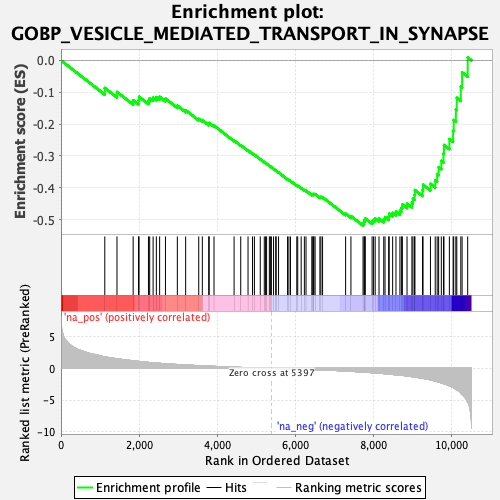
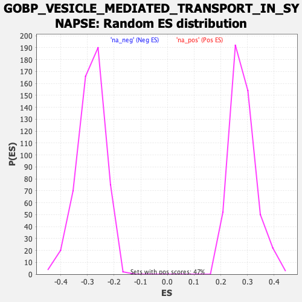

| Dataset | qlf.KOd4vsWTd4_gsea_score |
| Phenotype | NoPhenotypeAvailable |
| Upregulated in class | na_neg |
| GeneSet | GOBP_VESICLE_MEDIATED_TRANSPORT_IN_SYNAPSE |
| Enrichment Score (ES) | -0.5188798 |
| Normalized Enrichment Score (NES) | -1.8016275 |
| Nominal p-value | 0.0 |
| FDR q-value | 0.042999513 |
| FWER p-Value | 0.937 |

| SYMBOL | RANK IN GENE LIST | RANK METRIC SCORE | RUNNING ES | CORE ENRICHMENT | |
|---|---|---|---|---|---|
| 1 | DVL1 | 1121 | 1.814 | -0.0866 | No |
| 2 | DOC2A | 1433 | 1.509 | -0.0991 | No |
| 3 | ATP2A2 | 1847 | 1.185 | -0.1250 | No |
| 4 | CTNNB1 | 1985 | 1.091 | -0.1256 | No |
| 5 | CANX | 1998 | 1.080 | -0.1142 | No |
| 6 | P2RY1 | 2239 | 0.930 | -0.1265 | No |
| 7 | ADORA2A | 2270 | 0.912 | -0.1189 | No |
| 8 | BTBD9 | 2358 | 0.869 | -0.1172 | No |
| 9 | ACTG1 | 2441 | 0.835 | -0.1154 | No |
| 10 | PREPL | 2525 | 0.788 | -0.1143 | No |
| 11 | STXBP5 | 2674 | 0.730 | -0.1201 | No |
| 12 | VPS35 | 2978 | 0.603 | -0.1422 | No |
| 13 | PLAA | 3191 | 0.528 | -0.1564 | No |
| 14 | SLC18A2 | 3526 | 0.421 | -0.1836 | No |
| 15 | SYNJ1 | 3618 | 0.392 | -0.1878 | No |
| 16 | PPP3CB | 3782 | 0.346 | -0.1995 | No |
| 17 | GIT1 | 3793 | 0.344 | -0.1965 | No |
| 18 | BSN | 3917 | 0.313 | -0.2047 | No |
| 19 | GRIPAP1 | 4431 | 0.186 | -0.2518 | No |
| 20 | RAP1A | 4601 | 0.144 | -0.2663 | No |
| 21 | RAP1B | 4788 | 0.107 | -0.2829 | No |
| 22 | PRRT2 | 4903 | 0.088 | -0.2929 | No |
| 23 | SCRIB | 4951 | 0.079 | -0.2965 | No |
| 24 | BACE1 | 5101 | 0.051 | -0.3102 | No |
| 25 | STX3 | 5204 | 0.034 | -0.3196 | No |
| 26 | ITSN1 | 5237 | 0.030 | -0.3223 | No |
| 27 | RAB5A | 5263 | 0.026 | -0.3244 | No |
| 28 | STX2 | 5334 | 0.013 | -0.3310 | No |
| 29 | PIP5K1C | 5360 | 0.007 | -0.3333 | No |
| 30 | BLOC1S6 | 5386 | 0.003 | -0.3356 | No |
| 31 | AP2M1 | 5441 | -0.007 | -0.3407 | No |
| 32 | FMR1 | 5497 | -0.015 | -0.3458 | No |
| 33 | DTNBP1 | 5508 | -0.016 | -0.3466 | No |
| 34 | FCHO2 | 5569 | -0.027 | -0.3521 | No |
| 35 | TOR1A | 5799 | -0.064 | -0.3733 | No |
| 36 | CDK5R1 | 5834 | -0.070 | -0.3758 | No |
| 37 | ITGB3 | 5874 | -0.075 | -0.3786 | No |
| 38 | NAPA | 6036 | -0.104 | -0.3929 | No |
| 39 | ACTB | 6060 | -0.108 | -0.3939 | No |
| 40 | SYN3 | 6148 | -0.124 | -0.4008 | No |
| 41 | CLSTN1 | 6230 | -0.141 | -0.4069 | No |
| 42 | CLCN3 | 6272 | -0.149 | -0.4092 | No |
| 43 | RAPGEF4 | 6424 | -0.184 | -0.4215 | No |
| 44 | FBXL20 | 6431 | -0.185 | -0.4200 | No |
| 45 | SNAPIN | 6465 | -0.192 | -0.4209 | No |
| 46 | SNAP29 | 6473 | -0.195 | -0.4193 | No |
| 47 | CYFIP1 | 6505 | -0.200 | -0.4200 | No |
| 48 | DNAJC5 | 6628 | -0.231 | -0.4290 | No |
| 49 | SNAP23 | 6654 | -0.236 | -0.4287 | No |
| 50 | RAB3GAP1 | 6696 | -0.249 | -0.4298 | No |
| 51 | PSEN1 | 7286 | -0.410 | -0.4816 | No |
| 52 | GSK3B | 7422 | -0.460 | -0.4892 | No |
| 53 | UNC13A | 7732 | -0.583 | -0.5122 | Yes |
| 54 | PICALM | 7760 | -0.595 | -0.5079 | Yes |
| 55 | PFN2 | 7767 | -0.599 | -0.5015 | Yes |
| 56 | ARF6 | 7790 | -0.608 | -0.4966 | Yes |
| 57 | ROCK1 | 7964 | -0.679 | -0.5054 | Yes |
| 58 | ITSN2 | 8002 | -0.693 | -0.5009 | Yes |
| 59 | GRIK5 | 8043 | -0.712 | -0.4965 | Yes |
| 60 | NUMB | 8141 | -0.759 | -0.4971 | Yes |
| 61 | GIPC1 | 8262 | -0.824 | -0.4991 | Yes |
| 62 | SNAP47 | 8295 | -0.837 | -0.4925 | Yes |
| 63 | PACSIN1 | 8388 | -0.904 | -0.4909 | Yes |
| 64 | PPP3CC | 8401 | -0.914 | -0.4815 | Yes |
| 65 | GAK | 8490 | -0.960 | -0.4788 | Yes |
| 66 | CALM3 | 8575 | -1.014 | -0.4752 | Yes |
| 67 | SH3GL1 | 8676 | -1.073 | -0.4724 | Yes |
| 68 | DGKQ | 8714 | -1.097 | -0.4633 | Yes |
| 69 | VAMP4 | 8739 | -1.111 | -0.4527 | Yes |
| 70 | RAB8A | 8858 | -1.207 | -0.4501 | Yes |
| 71 | VPS18 | 8983 | -1.307 | -0.4469 | Yes |
| 72 | VAMP2 | 9010 | -1.325 | -0.4341 | Yes |
| 73 | DNAJC6 | 9052 | -1.354 | -0.4224 | Yes |
| 74 | PLD2 | 9059 | -1.361 | -0.4072 | Yes |
| 75 | SV2A | 9254 | -1.573 | -0.4077 | Yes |
| 76 | STXBP1 | 9268 | -1.585 | -0.3906 | Yes |
| 77 | CDK5 | 9458 | -1.811 | -0.3878 | Yes |
| 78 | PTEN | 9580 | -2.009 | -0.3763 | Yes |
| 79 | STX11 | 9630 | -2.089 | -0.3568 | Yes |
| 80 | ARC | 9667 | -2.162 | -0.3353 | Yes |
| 81 | RAB3A | 9736 | -2.297 | -0.3153 | Yes |
| 82 | AP3B1 | 9791 | -2.408 | -0.2927 | Yes |
| 83 | STX1A | 9804 | -2.438 | -0.2657 | Yes |
| 84 | DNM2 | 9942 | -2.750 | -0.2470 | Yes |
| 85 | AP3D1 | 10038 | -3.021 | -0.2213 | Yes |
| 86 | PRKCB | 10053 | -3.078 | -0.1871 | Yes |
| 87 | BIN1 | 10108 | -3.280 | -0.1543 | Yes |
| 88 | SYNJ2 | 10132 | -3.382 | -0.1175 | Yes |
| 89 | SYP | 10235 | -3.894 | -0.0823 | Yes |
| 90 | SLC4A8 | 10268 | -4.123 | -0.0377 | Yes |
| 91 | P2RX7 | 10411 | -5.252 | 0.0093 | Yes |
